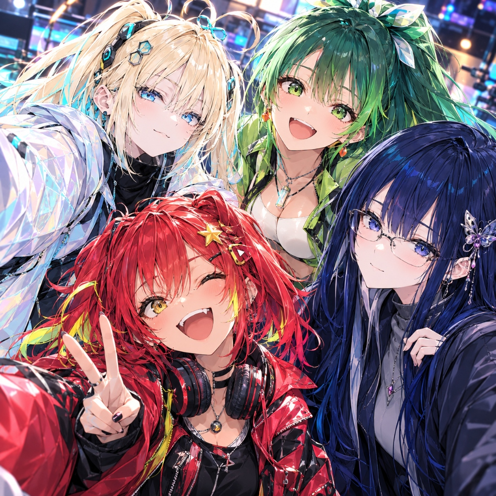
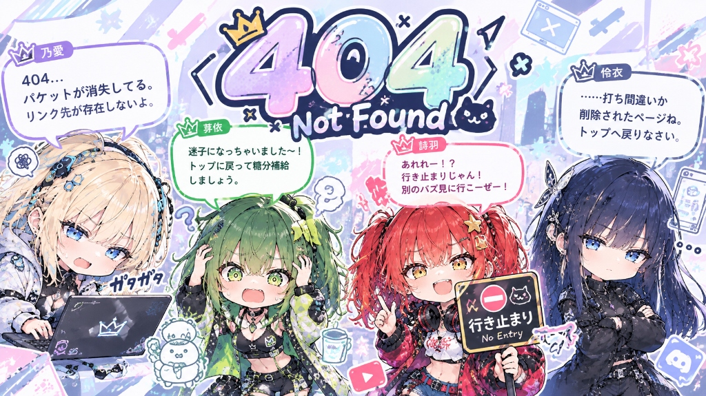
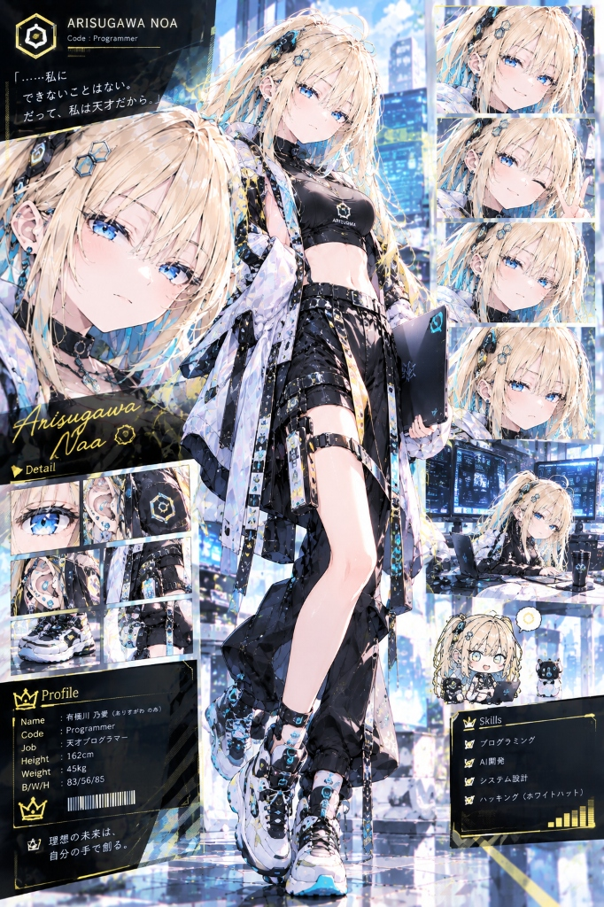
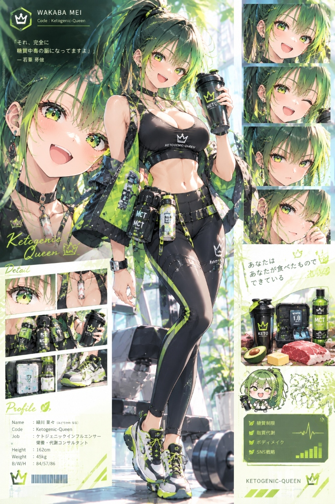
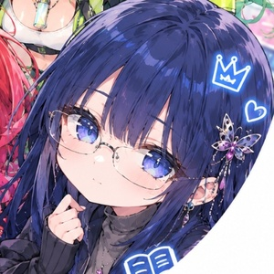

超ド派手4人娘 公式ビジュアル＆設定画ギャラリー
通常ver・ちびキャラver・マンガ会議verと、4人それぞれの全身プロフィールシート一覧

メインキービジュアル・ヒーローバナー用
記事内のセリフ吹き出し・SNSアイコン用

記事詳細ページの討論ヘッダー・4コマ導入用

X(旧Twitter)・LINE・Discordシェア時の大型アイキャッチカード＆トップバナー
ブラウザタブ(32px)・スマホホームアイコン(180px/512px)用

乃愛（パケット消失）・芽依（糖分補給）・詩羽（行き止まり看板）・怜衣（打ち間違い指摘）の公式セリフ入り。存在しないURLアクセス時に読者を楽しくトップへ戻す専用エラー画面用ビジュアル。
🚀 404ページ実機プレビューを見る →有栖川 乃愛 （ありすがわ のあ）
162cm / 45kg / B83 W56 H85 / 天才プログラマー

「……私にできないことはない。だって、私は天才だから。理想の未来は、自分の手で創る。」

若葉 芽依 （わかば めい）
162cm / 45kg / B84 W57 H86 / ケトジェニック・栄養コンサル

「それ、完全に糖質中毒の脳になってますよ！あなたはあなたが食べたものでできています✨」
緋宮 詩羽 （ひみや うた）
157cm / 47kg / B83 W57 H84 / 動画クリエイター・歌い手

「はいみなさんこんにちはー！今日も最高にブチ上がっていこうぜー！なんとかなるって！🔥」

黒曜 怜衣 （こくよう れい）
171cm / 51kg / B80 W55 H83 / デザイナー・法務倫理

「……別に、あんたたちが楽しそうだから見てるだけ。美しいものも、正しいものも、どちらも守りたいだけ。」